(07) pairwise corrs: (16, 20.0)#
project = iP-VAE, host = chewie, device = cuda:0
Motivation:
Show code cell source
# HIDE CODE
import os, sys
from IPython.display import display
# tmp & extras dir
git_dir = os.path.join(os.environ['HOME'], 'Dropbox/git')
extras_dir = os.path.join(git_dir, 'jb-progress-2025/_extras')
fig_base_dir = os.path.join(git_dir, 'jb-progress-2025/figs')
tmp_dir = os.path.join(git_dir, 'jb-progress-2025/tmp')
# GitHub
sys.path.insert(0, os.path.join(git_dir, '_IterativeVAE'))
from figures.analysis import plot_convergence
from figures.imgs import plot_weights
from figures.fighelper import *
from main.train import *
# warnings, tqdm, & style
warnings.filterwarnings('ignore', category=DeprecationWarning)
warnings.filterwarnings('ignore', category=FutureWarning)
warnings.filterwarnings('ignore', category=UserWarning)
from rich.jupyter import print
%matplotlib inline
set_style()
from base.helper import ParameterGrid
from utils.animation import show_movie
device_idx = 0
device = f'cuda:{device_idx}'
print(f"device: {device} ——— host: {os.uname().nodename}")
device: cuda:0 ——— host: chewie
Setup feeder params#
# Define parameter values
theta_delta = 15
theta_num = int(np.ceil(180 / theta_delta)) + 1
theta = np.linspace(0, 180, theta_num)
s_freq_min = 0.5
s_freq_max = 10.0
s_freq_delta = 0.5
s_freq_num = (s_freq_max - s_freq_min) / s_freq_delta
s_freq_num = int(np.ceil(s_freq_num)) + 1
s_freq = np.linspace(
start=s_freq_min,
stop=s_freq_max,
num=s_freq_num,
)
s_freq = np.insert(s_freq, obj=0, values=0.1)
params = {
'contrast': [1.0],
's_freq': np.round(s_freq, decimals=2),
'theta': np.round(theta, decimals=2),
}
print(params)
{ 'contrast': [1.0], 's_freq': array([ 0.1, 0.5, 1. , 1.5, 2. , 2.5, 3. , 3.5, 4. , 4.5, 5. , 5.5, 6. , 6.5, 7. , 7.5, 8. , 8.5, 9. , 9.5, 10. ]), 'theta': array([ 0., 15., 30., 45., 60., 75., 90., 105., 120., 135., 150., 165., 180.]) }
make param grid#
grid = ParameterGrid(params)
param_vectors = grid.get_param_vectors()
len(grid)
273
Make feeder#
n_frames_for_full_cycle = 500
feeder_kws = dict(
npix=16,
#
theta=param_vectors['theta'],
s_freq=param_vectors['s_freq'],
t_freq=1 / n_frames_for_full_cycle,
contrast=param_vectors['contrast'],
normalize_coords=True,
#
device=device,
flatten=True,
)
feeder = FEEDER_CLASSES['drifting-grating'](**feeder_kws)
Load trainer#
model_name = 'poisson_vH16_t-16_z-[512]_cl-10,10_<grad|lin>'
fit_name = 'b200-ep300-lr(0.005)_beta(20:0.1)_temp(0.01:0.5)_gr(500)_(2025_03_02,16:19)'
tr, meta = load_model(f"{model_name}/{fit_name}", device)
u0 = tonp(tr.model.layer.u_init[0].squeeze())
order = np.argsort(u0)
meta['checkpoint']
300
Xtract ftrs#
%%time
trial_timepoints = range(
n_frames_for_full_cycle,
n_frames_for_full_cycle * 2,
)
n_trials = 200
spk_counts_all = []
for i in tqdm(range(n_trials)):
tr.model.cfg.set_seeds(i)
output = tr.model.xtract_ftr(
feeder=FEEDER_CLASSES['drifting-grating'](**feeder_kws),
seq=range(2 * n_frames_for_full_cycle),
return_extras=['samples'],
).stack()
spks = output['samples'][:, trial_timepoints]
spk_counts_all.append(tonp(spks.sum(1)))
spk_counts_all = np.stack(spk_counts_all)
spk_counts_all.shape
100%|█████████████████████████████████████████| 200/200 [36:18<00:00, 10.89s/it]
CPU times: user 36min 9s, sys: 845 ms, total: 36min 10s
Wall time: 36min 18s
(200, 273, 512)
neuron_i = 303
_ = tr.model.show(order=[order[neuron_i]], nrows=1, dpi=50, method='abs-max')
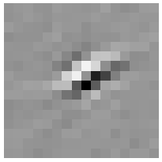
shape = (n_trials, *grid.param_lengths)
tuning_curve = spk_counts_all[..., neuron_i]
tuning_curve = tuning_curve.reshape(shape)
tuning_curve = tuning_curve.mean(0)
tuning_curve.shape
(1, 21, 13)
fig, ax = create_figure(1, 1, (9, 4))
sns.heatmap(data=tuning_curve[0, ...], ax=ax)
ax.set_ylabel('Spatial Frequency\n(# cycles per img)', fontsize=14)
ax.set_xlabel(r'$\theta$', fontsize=18)
ax.set_yticks(np.array(range(len(s_freq))) + 0.5)
ax.set_yticklabels(s_freq, rotation=0)
ax.set_xticks(np.array(range(len(theta))) + 0.5)
ax.set_xticklabels([str(int(angle)) for angle in theta], rotation=-90)
plt.show()
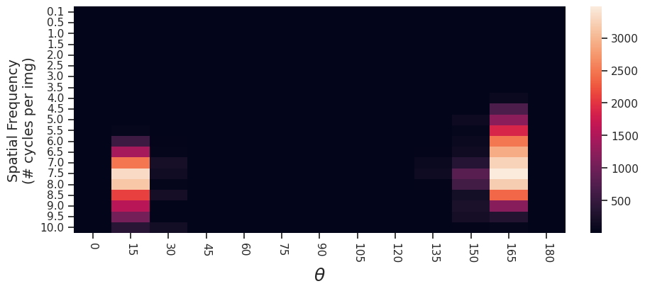
favorite_idx = np.argmax(tuning_curve)
favorite_params = grid[favorite_idx]
favorite_params
{'contrast': 1.0, 's_freq': 7.5, 'theta': 165.0}
favorite_s_freq_idx = grid.param_dict['s_freq'] == favorite_params['s_freq']
favorite_s_freq_idx = np.where(favorite_s_freq_idx)[0].item()
favorite_s_freq_idx
15
tuning_curve_theta = tuning_curve[0, favorite_s_freq_idx]
plot(tuning_curve_theta, marker='.');
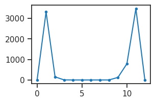
tr.model.cfg.seed
199
shape = (*grid.param_lengths, spk_counts_all.shape[-1])
tuning_curve_all = spk_counts_all.mean(0).reshape(shape)
tuning_curve_all = tuning_curve_all[0] # only one contrast
tuning_curve_all.shape
(21, 13, 512)
tuning_curves_theta = []
favorites_df = collections.defaultdict(list)
for neuron_i in range(tuning_curve_all.shape[-1]):
favorite_idx = np.argmax(tuning_curve_all[..., neuron_i])
favorite_params = grid[favorite_idx]
favorite_s_freq_idx = grid.param_dict['s_freq'] == favorite_params['s_freq']
favorite_s_freq_idx = np.where(favorite_s_freq_idx)[0].item()
tuning_theta = tuning_curve_all[favorite_s_freq_idx, :, neuron_i]
tuning_curves_theta.append(tuning_theta)
favorites_df['neruon_i'].append(neuron_i)
for k, v in favorite_params.items():
favorites_df[k].append(v)
tuning_curves_theta = np.stack(tuning_curves_theta, axis=1)
favorites_df = pd.DataFrame(favorites_df)
tuning_curves_theta.shape, favorites_df.shape
((13, 512), (512, 4))
def plot_tuning_hist(name, color='C0'):
bins = grid.param_dict[name].copy()
delta = bins[1] - bins[0]
bins = np.insert(bins, 0, -delta)
bins += delta / 2
fig, ax = create_figure(1, 1, (3, 2))
sns.histplot(favorites_df[name].values, label=name, bins=bins, color=color, ax=ax)
ax.legend()
plt.show()
plot_tuning_hist('theta', 'C2')
plot_tuning_hist('s_freq', 'C1')
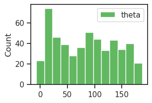
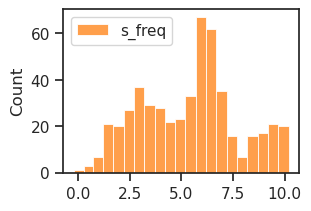
neuron_i = 54
plt.plot(tuning_curves_theta[:, neuron_i], marker='.')
[<matplotlib.lines.Line2D at 0x7ff3ecdb4a90>]
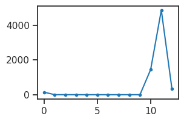
plt.plot(tuning_curves_theta / tuning_curves_theta.sum(0, keepdims=True));
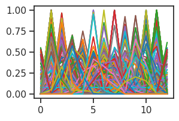
periodic_cmap, base_colors = get_periodic_palette(
len(grid.param_dict['theta']))
periodic_cmap
from_list

under
bad
over
len(base_colors)
13
fig, ax = create_figure()
neuron_i = 54
x2p = tuning_curves_theta[..., neuron_i]
ax.plot(x2p, color=base_colors[np.argmax(x2p)], marker='.')
xticks, xticklabels = zip(*[
(i, v) for i, v in
enumerate(grid.param_dict['theta'])
if i % 6 == 0
])
ax.set(xticks=xticks, xticklabels=xticklabels)
ax.tick_params(axis='x', labelrotation=-90)
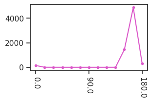
nrows = 16
ncols = int(np.ceil(tuning_curves_theta.shape[-1] / nrows))
fig, axes = create_figure(nrows, ncols, (ncols * 2.0, nrows * 1.5), sharex='all', sharey='row')
for i, ax in enumerate(axes.flat):
x2p = tuning_curves_theta[..., order[i]]
x2p /= x2p.sum()
ax.plot(x2p, color=base_colors[np.argmax(x2p)])
xticks, xticklabels = zip(*[
(i, v) for i, v in
enumerate(grid.param_dict['theta'])
if i % 6 == 0
])
for ax in axes[-1]:
ax.set(xticks=xticks, xticklabels=xticklabels)
ax.tick_params(axis='x', labelrotation=-90)
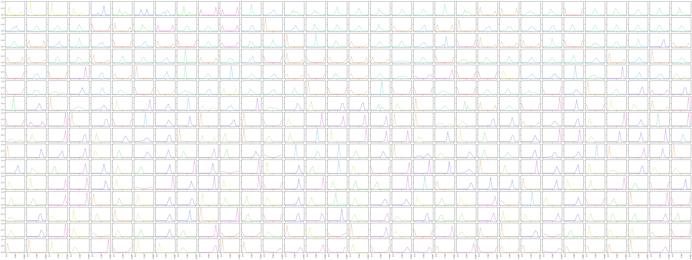
fig.savefig(pjoin(fig_base_dir, 'tuning_theta.pdf'), bbox_inches='tight')
# fig.savefig(pjoin(fig_base_dir, 'tuning_theta.png'), bbox_inches='tight', dpi=300)
fig, ax = create_figure(1, 1, (7, 5))
for i in range(tuning_curves_theta.shape[-1]):
x2p = tuning_curves_theta[..., order[i]]
x2p /= x2p.sum()
ax.plot(x2p, color=base_colors[np.argmax(x2p)], lw=1.1)
xticks, xticklabels = zip(*[
(i, v) for i, v in
enumerate(grid.param_dict['theta'])
if i % 1 == 0
])
ax.set(xticks=xticks, xticklabels=xticklabels)
ax.tick_params(axis='x', labelrotation=-90)
fig.savefig(pjoin(fig_base_dir, 'tuning_theta_overlaid.pdf'), bbox_inches='tight')
plt.show()
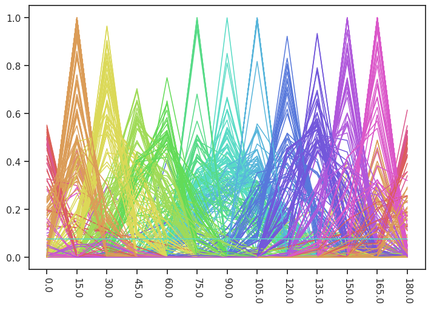
tr.model.show(order=order, method='abs-max');
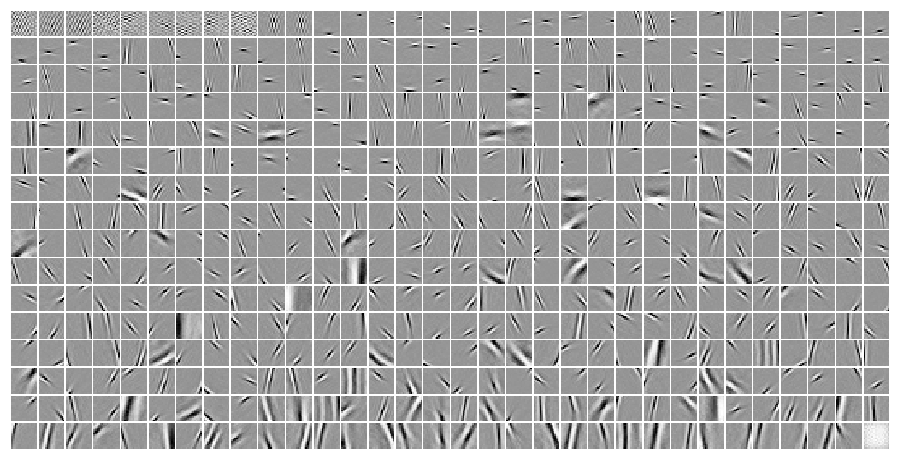
corr_signal = 1 - sp_dist.squareform(sp_dist.pdist(
X=tuning_curves_theta.T,
metric='correlation',
))
corr_signal.shape
(512, 512)
fig, ax = create_figure(1, 1, (6.5, 5))
im = ax.imshow(corr_signal, cmap=rd_or_bu(reverse=True), vmin=-1, vmax=1)
plt.colorbar(im, ax=ax)
plt.show()
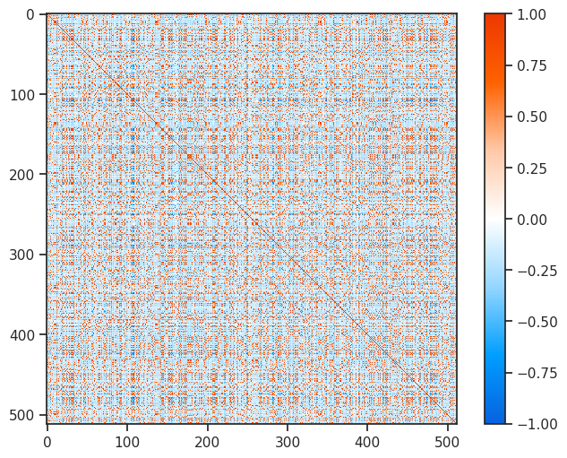
w = tr.model.layer.get_weight()
phi_t_phi = tonp(w.T @ w)
corr_phi = 1 - sp_dist.squareform(sp_dist.pdist(
X=tonp(w.T),
metric='correlation',
))
phi_t_phi.shape, corr_phi.shape
((512, 512), (512, 512))
r_between_corrsignal_phitphi = sp_stats.pearsonr(
corr_signal[np.triu_indices(len(corr_signal), k=1)],
phi_t_phi[np.triu_indices(len(phi_t_phi), k=1)],
)
print(r_between_corrsignal_phitphi)
PearsonRResult(statistic=-0.08080159561252645, pvalue=2.335629960673062e-188)
fig, axes = create_figure(1, 2, (12, 4))
im = axes[0].imshow(corr_phi, cmap=rd_or_bu(reverse=True), vmin=-1, vmax=1)
plt.colorbar(im, ax=axes[0])
im = axes[1].imshow(corr_phi, cmap=rd_or_bu(reverse=True), vmin=-0.15, vmax=0.15)
plt.colorbar(im, ax=axes[1])
plt.show()
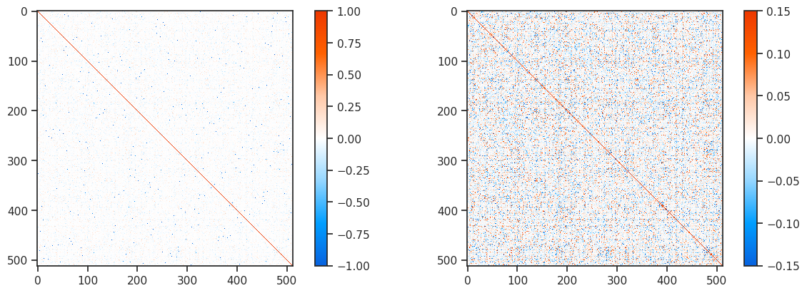
r_between_corrsignal_corrphi = sp_stats.pearsonr(
corr_signal[np.triu_indices(len(corr_signal), k=1)],
corr_phi[np.triu_indices(len(corr_phi), k=1)],
)
print(r_between_corrsignal_corrphi)
PearsonRResult(statistic=-0.08068564818893113, pvalue=8.02397288665245e-188)
fig, ax = create_figure(1, 1, (4, 4))
plt.scatter(
x=corr_signal[np.triu_indices(len(corr_signal), k=1)],
y=corr_phi[np.triu_indices(len(corr_phi), k=1)],
s=5,
)
ax_square(ax)
plt.show()
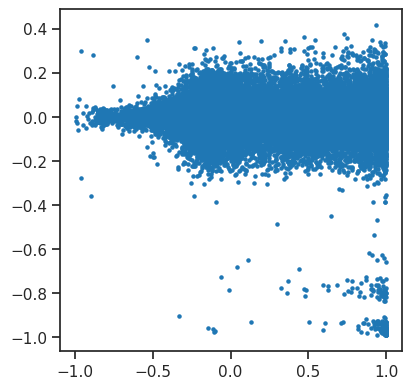
selected_neurons = [303, 303 + 32]
_ = tr.model.show(order=order[selected_neurons], nrows=1, dpi=20, method='abs-max')
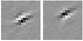
plot(tuning_curves_theta[:, order[selected_neurons]], marker='.');
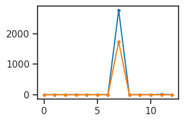
msg = f"signal correlation: {corr_signal[order[selected_neurons[0]], order[selected_neurons[1]]]:0.3f}"
msg += f", phi correlation: {corr_phi[order[selected_neurons[0]], order[selected_neurons[1]]]:0.3f}"
print(msg)
signal correlation: 1.000, phi correlation: -0.069
w = tonp(tr.model.layer.get_weight())
w.shape
(256, 512)
fig, ax = create_figure(1, 1, (10, 3))
ax.plot(w[:, order[selected_neurons[0]]])
ax.plot(w[:, order[selected_neurons[1]]])
plt.show()
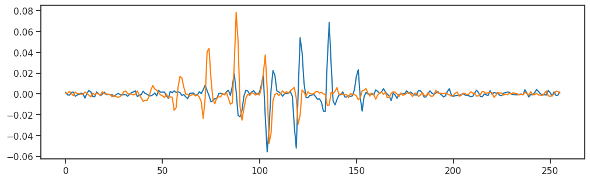
favorites_df.loc[favorites_df['neruon_i'].isin(order[selected_neurons])]
| neruon_i | contrast | s_freq | theta | |
|---|---|---|---|---|
| 206 | 206 | 1.0 | 9.5 | 105.0 |
| 345 | 345 | 1.0 | 10.0 | 105.0 |
selected_s_freqs = [9.5, 10.0]
selected_thetas = [105.0]
selected_df = []
for trial_i in range(n_trials):
for stim_i in range(len(grid)):
params = grid[stim_i]
cond_accept = (
params['s_freq'] in selected_s_freqs
and params['theta'] in selected_thetas
)
if not cond_accept:
continue
params = {
k: [v] * spk_counts_all.shape[-1]
for k, v in params.items()
}
params = {
**params,
'neuron': range(spk_counts_all.shape[-1]),
'counts': spk_counts_all[trial_i, stim_i],
}
selected_df.append(params)
selected_df = pd.DataFrame(merge_dicts(selected_df))
df2p = []
for i in order[selected_neurons]:
_df = selected_df.loc[selected_df['neuron'] == i]
_df = _df.rename(columns={'counts': f'counts_{i}'})
_df = _df.drop(columns='neuron')
df2p.append(_df)
shared_cols = set.intersection(*(set(df.columns) for df in df2p))
df2p = pd.concat([
df.set_index(list(shared_cols))
for df in df2p
], axis=1).reset_index()
df2p
| theta | contrast | s_freq | counts_345 | counts_206 | |
|---|---|---|---|---|---|
| 0 | 105.0 | 1.0 | 9.5 | 2236.0 | 1750.0 |
| 1 | 105.0 | 1.0 | 10.0 | 2594.0 | 1707.0 |
| 2 | 105.0 | 1.0 | 9.5 | 2168.0 | 1739.0 |
| 3 | 105.0 | 1.0 | 10.0 | 2695.0 | 1802.0 |
| 4 | 105.0 | 1.0 | 9.5 | 2035.0 | 1822.0 |
| ... | ... | ... | ... | ... | ... |
| 395 | 105.0 | 1.0 | 10.0 | 2788.0 | 1674.0 |
| 396 | 105.0 | 1.0 | 9.5 | 2155.0 | 1790.0 |
| 397 | 105.0 | 1.0 | 10.0 | 2722.0 | 1698.0 |
| 398 | 105.0 | 1.0 | 9.5 | 2137.0 | 1729.0 |
| 399 | 105.0 | 1.0 | 10.0 | 2770.0 | 1763.0 |
400 rows × 5 columns
fig, axes = create_figure(1, 3, (10, 3.5))
_df = df2p.loc[df2p['theta'] == 105.0]
# _df = df2p.loc[
# (df2p['theta'] == 105.0) &
# (df2p['s_freq'] == 9.5)
# ]
sns.scatterplot(
data=_df,
x='counts_206',
y='counts_345',
hue='s_freq',
palette='muted',
ax=axes[0],
)
ax_square(axes)
plt.show()
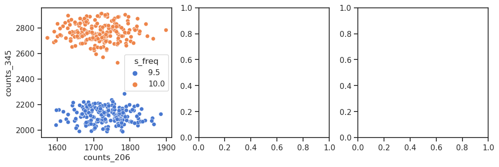
df2p = selected_df.loc[selected_df['neuron'].isin(neurons)]
df2p.shape
(1600, 5)
df2p
| contrast | s_freq | theta | neuron | counts | |
|---|---|---|---|---|---|
| 130 | 1.0 | 4.5 | 0.0 | 130 | 2861.0 |
| 170 | 1.0 | 4.5 | 0.0 | 170 | 3977.0 |
| 642 | 1.0 | 4.5 | 180.0 | 130 | 2660.0 |
| 682 | 1.0 | 4.5 | 180.0 | 170 | 4658.0 |
| 1154 | 1.0 | 7.5 | 0.0 | 130 | 5085.0 |
| ... | ... | ... | ... | ... | ... |
| 408234 | 1.0 | 4.5 | 180.0 | 170 | 4522.0 |
| 408706 | 1.0 | 7.5 | 0.0 | 130 | 5082.0 |
| 408746 | 1.0 | 7.5 | 0.0 | 170 | 4300.0 |
| 409218 | 1.0 | 7.5 | 180.0 | 130 | 5085.0 |
| 409258 | 1.0 | 7.5 | 180.0 | 170 | 4360.0 |
1600 rows × 5 columns
spk_counts_mean = spk_counts_all.mean(0)
spk_counts_var = spk_counts_all.var(0)
spk_counts_mean.shape, spk_counts_var.shape
((273, 512), (273, 512))
len(grid)
273
ff = spk_counts_var / spk_counts_mean
histplot(ff.ravel());
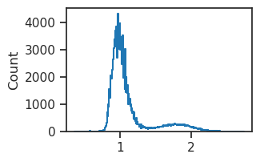
fig, ax = create_figure(1, 1, (4, 4))
ax.scatter(x=spk_counts_mean.ravel(), y=spk_counts_var.ravel(), s=10)
ax.set(xlim=(0, 10000), ylim=(0, 10000))
[(0.0, 10000.0), (0.0, 10000.0)]
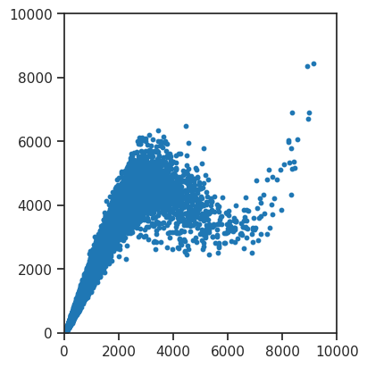
spk_counts_all.shape, len(grid)
((200, 273, 512), 273)
neuron_pairs = list(itertools.combinations(
range(spk_counts_all.shape[-1]), 2))
corr_df = collections.defaultdict(list)
for stim_i in tqdm(range(len(grid))):
noise_corr = 1 - sp_dist.squareform(sp_dist.pdist(
X=spk_counts_all[:, stim_i].T,
metric='correlation',
))
for i, j in neuron_pairs:
for k, v in grid[stim_i].items():
corr_df[k].append(v)
corr_df['cell_1'].append(i)
corr_df['cell_2'].append(j)
corr_df['noise_corr'].append(noise_corr[i, j])
corr_df = pd.DataFrame(corr_df)
corr_df.shape
100%|█████████████████████████████████████████| 273/273 [00:37<00:00, 7.29it/s]
(35712768, 6)
corr_df
| contrast | s_freq | theta | cell_1 | cell_2 | noise_corr | |
|---|---|---|---|---|---|---|
| 0 | 1.0 | 0.1 | 0.0 | 0 | 1 | 0.055128 |
| 1 | 1.0 | 0.1 | 0.0 | 0 | 2 | 0.004976 |
| 2 | 1.0 | 0.1 | 0.0 | 0 | 3 | 0.042104 |
| 3 | 1.0 | 0.1 | 0.0 | 0 | 4 | -0.058583 |
| 4 | 1.0 | 0.1 | 0.0 | 0 | 5 | -0.000867 |
| ... | ... | ... | ... | ... | ... | ... |
| 35712763 | 1.0 | 10.0 | 180.0 | 508 | 510 | 0.072464 |
| 35712764 | 1.0 | 10.0 | 180.0 | 508 | 511 | 0.001790 |
| 35712765 | 1.0 | 10.0 | 180.0 | 509 | 510 | 0.129267 |
| 35712766 | 1.0 | 10.0 | 180.0 | 509 | 511 | -0.087735 |
| 35712767 | 1.0 | 10.0 | 180.0 | 510 | 511 | -0.161672 |
35712768 rows × 6 columns
np.argsort(corr_phi[130])
array([306, 370, 475, 498, 102, 389, 397, 298, 54, 127, 170, 364, 485,
183, 316, 104, 362, 287, 333, 334, 182, 400, 424, 12, 125, 106,
318, 5, 281, 282, 305, 363, 162, 48, 176, 286, 185, 351, 328,
98, 69, 169, 107, 277, 360, 294, 367, 511, 265, 315, 146, 411,
352, 226, 89, 324, 491, 9, 174, 150, 323, 224, 368, 278, 358,
178, 441, 217, 138, 335, 192, 103, 228, 279, 499, 74, 366, 81,
114, 173, 393, 253, 154, 462, 75, 346, 303, 302, 161, 442, 3,
64, 450, 44, 296, 248, 250, 446, 171, 15, 380, 307, 187, 39,
510, 266, 230, 37, 199, 482, 115, 288, 160, 269, 452, 479, 200,
396, 489, 164, 147, 456, 436, 227, 345, 66, 10, 433, 21, 148,
435, 369, 276, 309, 321, 280, 466, 53, 205, 119, 290, 134, 465,
507, 262, 447, 471, 459, 285, 196, 244, 428, 155, 8, 120, 468,
246, 233, 509, 320, 483, 256, 100, 25, 65, 490, 128, 263, 348,
222, 401, 28, 405, 137, 7, 78, 391, 418, 143, 112, 425, 412,
344, 386, 126, 467, 463, 409, 31, 440, 493, 379, 254, 247, 260,
255, 242, 417, 291, 239, 438, 20, 42, 257, 2, 314, 365, 47,
342, 264, 289, 172, 194, 402, 4, 381, 220, 245, 24, 473, 177,
437, 480, 311, 121, 204, 343, 231, 86, 166, 11, 135, 46, 317,
313, 449, 377, 184, 429, 124, 372, 180, 486, 97, 252, 153, 330,
387, 133, 43, 68, 145, 159, 23, 72, 117, 327, 300, 167, 186,
395, 455, 73, 40, 261, 232, 223, 51, 502, 416, 504, 410, 58,
144, 111, 14, 93, 357, 17, 451, 70, 325, 57, 295, 477, 336,
423, 390, 322, 299, 259, 339, 414, 110, 13, 32, 29, 292, 297,
426, 56, 132, 238, 49, 207, 55, 270, 444, 500, 197, 188, 152,
210, 202, 420, 193, 478, 413, 33, 237, 142, 27, 384, 38, 77,
140, 331, 36, 94, 136, 229, 116, 329, 52, 243, 221, 301, 83,
361, 434, 408, 189, 156, 399, 341, 62, 388, 445, 274, 84, 82,
181, 464, 168, 454, 403, 240, 201, 375, 216, 122, 326, 234, 431,
99, 129, 356, 80, 198, 501, 355, 175, 354, 497, 275, 215, 427,
1, 149, 141, 508, 373, 212, 376, 353, 258, 76, 214, 349, 179,
272, 487, 92, 190, 371, 496, 88, 505, 304, 457, 158, 383, 470,
139, 350, 419, 374, 109, 492, 61, 310, 225, 50, 267, 398, 35,
203, 30, 19, 63, 506, 211, 101, 123, 432, 79, 151, 163, 469,
439, 96, 415, 157, 460, 271, 251, 406, 45, 484, 85, 448, 338,
308, 213, 18, 476, 131, 71, 95, 6, 195, 206, 422, 495, 41,
236, 16, 312, 90, 108, 219, 453, 472, 34, 319, 404, 283, 494,
359, 443, 26, 430, 488, 67, 385, 392, 347, 208, 284, 481, 268,
273, 407, 249, 105, 91, 340, 118, 382, 458, 378, 332, 474, 60,
59, 421, 209, 191, 113, 218, 503, 165, 337, 461, 235, 394, 87,
22, 241, 0, 293, 130])
neurons = [120, 22]
_ = tr.model.show(order=neurons, nrows=1, dpi=20, method='abs-max')
---------------------------------------------------------------------------
NameError Traceback (most recent call last)
Cell In[1], line 3
1 neurons = [120, 22]
----> 3 _ = tr.model.show(order=neurons, nrows=1, dpi=20, method='abs-max')
NameError: name 'tr' is not defined
plot(tuning_curves_theta[:, neurons], marker='.');
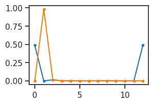
msg = f"signal correlation: {corr_signal[neurons[0], neurons[1]]:0.3f}"
msg += f", phi correlation: {corr_phi[neurons[0], neurons[1]]:0.3f}"
print(msg)
signal correlation: -0.127, phi correlation: 0.136
_df = corr_df.loc[
(corr_df['cell_1'] == sorted(neurons)[0]) &
(corr_df['cell_2'] == sorted(neurons)[1])
]
_df = _df.pivot(columns='theta', index='s_freq', values='noise_corr')
sns.heatmap(
data=_df,
cmap=rd_or_bu(reverse=True),
vmin=-0.2,
vmax=0.2,
);
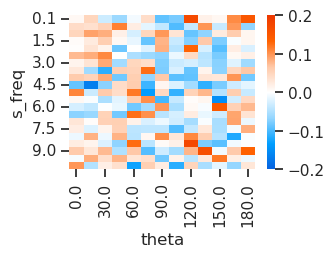
sns.histplot(data=corr_df, x='noise_corr', kde=True)
plt.show()
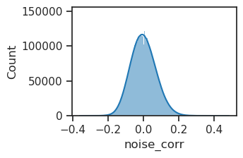
sorted_ids = np.argsort(corr_df['noise_corr'].values)
corr_df.iloc[sorted_ids[2]]
contrast 1.000000
s_freq 7.000000
theta 60.000000
cell_1 20.000000
cell_2 121.000000
noise_corr -0.346133
Name: 24341906, dtype: float64
neurons = [20, 121]
_ = tr.model.show(order=neurons, nrows=1, dpi=20, method='abs-max')
fig, ax = create_figure()
ax.plot(tuning_curves_theta[:, neurons], marker='.')
xticks, xticklabels = zip(*[
(i, v) for i, v in
enumerate(grid.param_dict['theta'])
if i % 1 == 0
])
ax.set(xticks=xticks, xticklabels=xticklabels)
ax.tick_params(axis='x', labelrotation=-90)
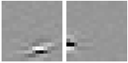
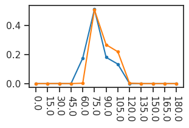
_df = corr_df.loc[
(corr_df['cell_1'] == sorted(neurons)[0]) &
(corr_df['cell_2'] == sorted(neurons)[1]) &
(corr_df['s_freq'] == 7.0) &
(corr_df['theta'] == 75)
]
# _df = _df.pivot(
# columns='theta',
# index='s_freq',
# values='noise_corr',
# )
_df
| contrast | s_freq | theta | cell_1 | cell_2 | noise_corr | |
|---|---|---|---|---|---|---|
| 24472722 | 1.0 | 7.0 | 75.0 | 20 | 121 | 0.084727 |
msg = f"signal corr: {corr_signal[neurons[0], neurons[1]]:0.3f}\n"
msg += f"noise corr: {_df['noise_corr'].values.item():0.3f}\n"
msg += f"phi corr: {corr_phi[neurons[0], neurons[1]]:0.3f}"
print(msg)
signal corr: 0.923 noise corr: 0.085 phi corr: 0.013
selected_s_freqs = [7.0]
selected_thetas = [75.0]
selected_df = []
for trial_i in range(n_trials):
for stim_i in range(len(grid)):
params = grid[stim_i]
cond_accept = (
params['s_freq'] in selected_s_freqs
and params['theta'] in selected_thetas
)
if not cond_accept:
continue
params = {
k: [v] * spk_counts_all.shape[-1]
for k, v in params.items()
}
params = {
**params,
'neuron': range(spk_counts_all.shape[-1]),
'counts': spk_counts_all[trial_i, stim_i],
}
selected_df.append(params)
selected_df = pd.DataFrame(merge_dicts(selected_df))
df2p = []
for i in neurons:
_df = selected_df.loc[selected_df['neuron'] == i]
_df = _df.rename(columns={'counts': f'counts_{i}'})
_df = _df.drop(columns='neuron')
df2p.append(_df)
shared_cols = set.intersection(*(set(df.columns) for df in df2p))
df2p = pd.concat([
df.set_index(list(shared_cols))
for df in df2p
], axis=1).reset_index()
df2p
| s_freq | contrast | theta | counts_20 | counts_121 | |
|---|---|---|---|---|---|
| 0 | 7.0 | 1.0 | 75.0 | 1911.0 | 599.0 |
| 1 | 7.0 | 1.0 | 75.0 | 1939.0 | 604.0 |
| 2 | 7.0 | 1.0 | 75.0 | 2024.0 | 570.0 |
| 3 | 7.0 | 1.0 | 75.0 | 2053.0 | 585.0 |
| 4 | 7.0 | 1.0 | 75.0 | 1881.0 | 583.0 |
| ... | ... | ... | ... | ... | ... |
| 195 | 7.0 | 1.0 | 75.0 | 2014.0 | 580.0 |
| 196 | 7.0 | 1.0 | 75.0 | 2097.0 | 610.0 |
| 197 | 7.0 | 1.0 | 75.0 | 1980.0 | 613.0 |
| 198 | 7.0 | 1.0 | 75.0 | 1866.0 | 628.0 |
| 199 | 7.0 | 1.0 | 75.0 | 2005.0 | 653.0 |
200 rows × 5 columns
fig, ax = create_figure(1, 1, (5, 5))
# _df = df2p.loc[df2p['theta'] == 180.0]
_df = df2p.loc[
(df2p['theta'] == 75.0) &
(df2p['s_freq'] == 7.0)
]
sns.scatterplot(
data=_df,
x='counts_20',
y='counts_121',
hue='s_freq',
palette='muted',
ax=ax,
)
ax_square(ax)
plt.show()
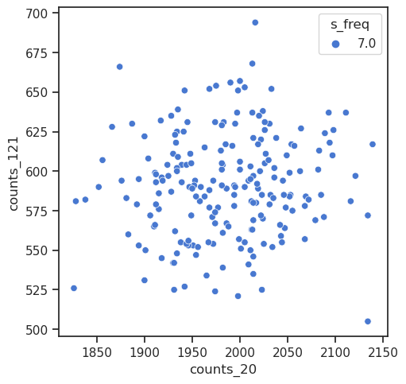
r_between_corrsignal_corrphi = sp_stats.pearsonr(
corr_noise[np.triu_indices(len(corr_noise), k=1)],
corr_phi[np.triu_indices(len(corr_phi), k=1)],
)
print(r_between_corrsignal_corrphi)
PearsonRResult(statistic=0.005548192943350325, pvalue=0.04478224124304325)
fig, axes = create_figure(1, 2, (12, 4))
im = axes[0].imshow(corr_noise, cmap=rd_or_bu(reverse=True), vmin=-1, vmax=1)
plt.colorbar(im, ax=axes[0])
im = axes[1].imshow(corr_noise, cmap=rd_or_bu(reverse=True), vmin=-0.15, vmax=0.15)
plt.colorbar(im, ax=axes[1])
plt.show()
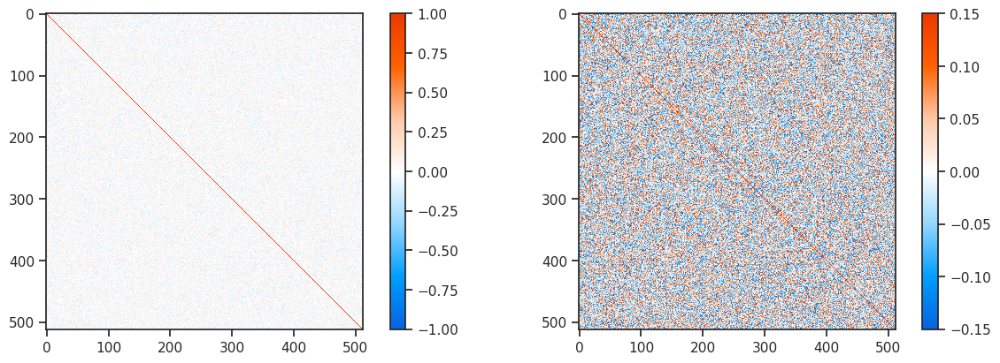